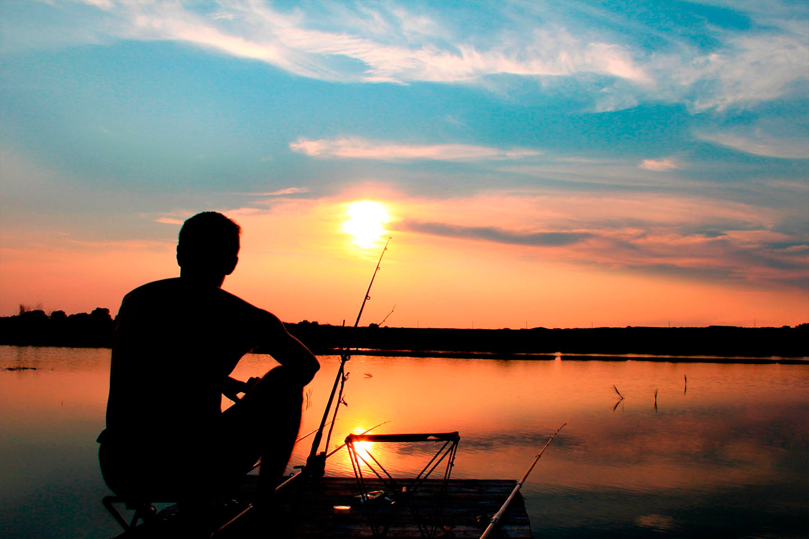
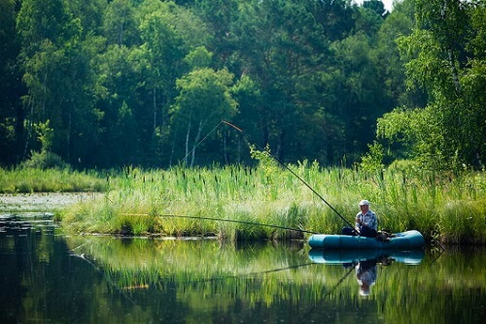
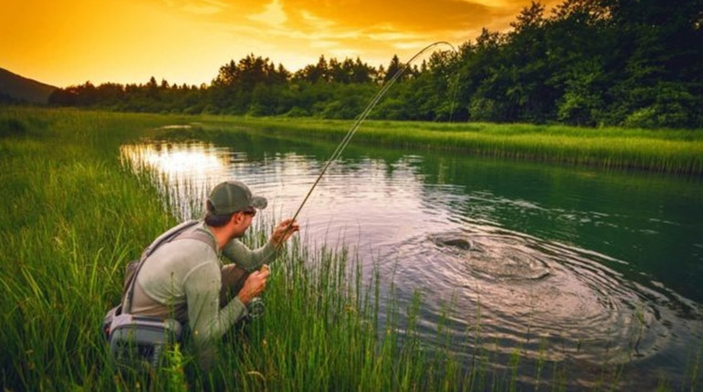
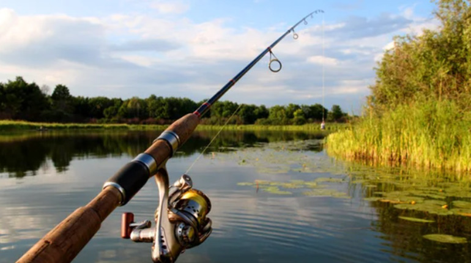

Про наш сайт
Цей сайт створений для обміну досвідом риболовлі, спілкування на форумі та вивчення нових методів.




Цей сайт створений для обміну досвідом риболовлі, спілкування на форумі та вивчення нових методів.